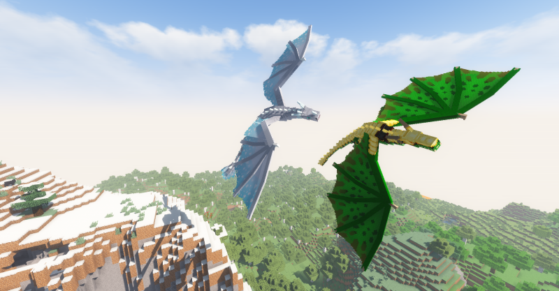

Ice and Fire Dragons – глобальная модификация, добавляющая в игровой мир множество драконов, а также блоки и предметы, которые связаны с этим существом. Драконы будут делиться на 2 типа: огненных и ледяных. Первый тип драконов обитает во всех биомах игрового мира, а вот ледяных можно обнаружить лишь в снежных биомах игры. Но также, кроме драконов, есть и другие существа, например, левиафаны, тролли, циклопы и многие другие существа, среди которых есть даже боссы, победить их крайне тяжело. Мод очень популярен, даже несмотря на то, что он недоступен на актуальных версиях игры. Последняя версия игры – 1.18.2, но самое примечательное, что большое количество скачиваний мод получил на версии 1.16. Вы также можете установить мод на более старые версии игры, если вы любитель этого. Приступим к более подробному изучению мода, чтобы вы могли знать, что вас ожидает в игровом мире с этим дополнением.Back
